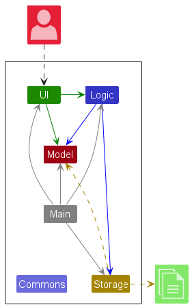
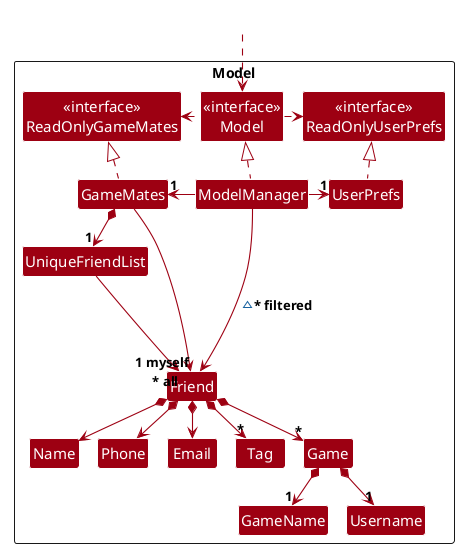
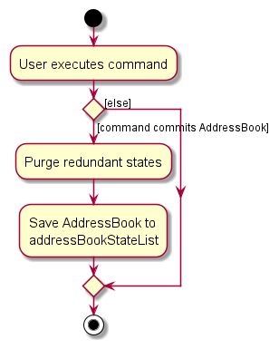

Developer Guide
- Acknowledgements
- Setting up, getting started
- Design
- Implementation
- Documentation, logging, testing, dev-ops
- Appendix: Requirements
-
Appendix: Instructions for manual testing
- Prerequisites and test isolation
- Launch, help and window settings
- Friend creation, editing, identity and tags
- Friend filters and displayed indices
- Game cards, empty states and display-filter clearing
- Deletion and clearing
- Saved profile, game round trip and pending commands
- Missing, invalid and unwritable files
- Documentation preview
Acknowledgements
-
Vavr provides
Option,Try, and checked-function adapters for parsing, edit descriptors, and storage.
This guide distinguishes implemented behaviour from the pending MVP integration. The requirements and explicitly proposed features below describe product goals, not a claim that every goal is implemented.
Setting up, getting started
Refer to the guide Setting up and getting started.
Design
.puml files used to create diagrams are in docs/diagrams. Refer to the PlantUML Tutorial at se-edu/guides to learn how to create and edit diagrams.
Architecture

The Architecture Diagram given above explains the high-level design of the App.
The following provides a quick overview of the main components and their interactions.
Main components of the architecture
Main (consisting of classes Main and MainApp) is in charge of the app launch and shut down.
- At app launch, it initializes the other components in the correct sequence, and connects them up with each other.
- At shut down, it shuts down the other components and invokes cleanup methods where necessary.
The bulk of the app’s work is done by the following four components:
-
UI: The UI of the App. -
Logic: The command executor. -
Model: Holds the data of the App in memory. -
Storage: Reads data from, and writes data to, the hard disk.
Commons represents a collection of classes used by multiple other components.
How the architecture components interact with each other
The Sequence Diagram below shows how the components interact with each other for the scenario where the user issues the command delete 1.

Each of the four main components (also shown in the diagram above),
- defines its API in an
interfacewith the same name as the Component. - provides its functionality through a concrete
{Component Name}Managerclass that implements the corresponding API interface.
For example, the Logic component defines its API in Logic.java and implements it in LogicManager.java. Other components interact with a component through its interface rather than its concrete class, preventing them from coupling to that component’s implementation, as illustrated in the following partial class diagram.

The sections below give more details of each component.
UI component
The API of this component is specified in Ui.java

The UI consists of MainWindow, CommandBox, ResultDisplay, FriendListPanel, FriendDetailsPanel,
GameDetailsCard, HelpWindow and StatusBarFooter. These inherit from UiPart, which loads matching FXML layouts.
MainWindow.fxml keeps the observable friend list on the left of a SplitPane and the details panel on the right.
FriendDetailsPanel renders contact details, tags and sorted game cards; it does not replace the friend list.
The UI component uses the JavaFX UI framework. The layouts of these UI parts are defined in matching .fxml files in src/main/resources/view. For example, MainWindow.fxml specifies the layout of MainWindow.
The UI component,
- executes user commands using the
Logiccomponent. - listens for changes to
Modeldata so that the UI can be updated with the modified data. - keeps a reference to the
Logiccomponent, because theUIrelies on theLogicto execute commands. - depends on some classes in the
Modelcomponent because it displaysFriendobjects from the model.
FriendListPanel sends selection changes to a consumer owned by MainWindow. Command-driven selection uses
CommandResult.friendToShow and gameFilter, described under Viewing a friend’s games.
Successful results without a friend payload show Logic.getMyself(); a single-result find selects that friend.
Parse or command failures update feedback without explicitly refreshing details. A game filter is applied only
while rendering cards, preserving both the model and the left-hand friend-list predicate.
Logic component
API : Logic.java
Here’s a (partial) class diagram of the Logic component:

The sequence diagram below illustrates the interactions within the Logic component, taking execute("delete 1") API call as an example.

DeleteCommandParser should end at the destroy marker (X), but due to a limitation of PlantUML, it continues to the end of the diagram.
How the Logic component works:
- When
Logicis called upon to execute a command, the command is passed to aGameMatesParserobject, which in turn creates a parser that matches the command (e.g.,DeleteCommandParser) and uses it to parse the command. - This results in a
Commandobject (more precisely, an object of one of its subclasses e.g.,DeleteCommand) which is executed by theLogicManager. - The command can communicate with the
Modelwhen it is executed (e.g. to delete a friend).
Note that although this is shown as a single step in the diagram above for simplicity, the code can require several interactions between the command object and theModelto complete the operation. - The command creates a
CommandResult.LogicManagersaves the completeReadOnlyGameMatesthroughStoragebefore returning it to the UI. Saving applies to viewing commands too. Parse and execution failures skip saving; an I/O error after execution is translated into aCommandExceptionwithout rolling back the in-memory change.
Here are the other classes in Logic (omitted from the class diagram above) that are used for parsing a user command:

How the parsing works:
- When called upon to parse a user command, the
GameMatesParserclass creates anXYZCommandParser(XYZis a placeholder for the specific command name, e.g.,AddCommandParser). The parser uses the other classes shown above to parse the user command and create anXYZCommandobject (e.g.,AddCommand). TheGameMatesParserreturns that object as aCommandobject. - All
XYZCommandParserclasses, such asAddCommandParserandDeleteCommandParser, implement theParserinterface so they can be treated similarly where appropriate, for example during testing.
Optional values
Command parsers and edit descriptors use Vavr Option to represent omitted values. A missing prefix
is absent, while a supplied prefix with an empty value is present and subject to validation. Add
commands default omitted contact details to Phone.EMPTY and Email.EMPTY. Edits preserve omitted
fields; a single empty t/ clears the tags. Descriptor tag getters expose an unmodifiable set, and
setters retain defensive copies.
Parsing continues to report the first invalid value through ParseException. Vavr’s checked-function
adapters propagate the original exception, so invalid input is never treated as an omitted argument.
Model component
API : Model.java

The Model component,
- stores friends in
GameMatesthroughUniqueFriendList, plus a separateFriend myselfprofile with a default value. The profile is not in the friend list. Add/edit commands separately prevent names shared between a friend and the profile. - exposes an observable
FilteredList<Friend>backed by the stored friends. The filter is a predicate over the full list, rather than a second collection of copied friends. - stores each friend’s games as
Gameobjects, including their game name, username and optional metadata. - stores a
UserPrefsobject that represents the user’s preferences (currently, just the GUI settings). This is exposed to the outside as aReadOnlyUserPrefsobject. - does not depend on any of the other three components (as the
Modelrepresents data entities of the domain, they should make sense on their own without depending on other components)
Friend contains Name, optional contact values, a set of Tag objects and a set of Game objects.
Game contains GameName, Username and an immutable metadata set. Name equality ignores case and collapses repeated ASCII spaces;
GameName.equals compares complete names using lower-case normalization with Locale.ROOT.
Username preserves case. Game.isSameGame compares game names, while full equality also compares usernames and metadata.
The set representation alone does not enforce
one entry per game name when different usernames are loaded from JSON; do not infer game-command duplicate handling
from the proposed specification.
GameMates, and each Friend references tags from that list. This lets GameMates maintain one Tag object per unique tag instead of each Friend holding its own Tag objects.
Storage component
API : Storage.java

The Storage component,
- can save both GameMates data and user preference data in JSON format, and read them back into corresponding objects.
- is implemented by
StorageManager, which delegates the actual JSON file access toJsonGameMatesStorageandJsonUserPrefsStorage(one class per data file). - converts game metadata through
JsonAdaptedGameandJsonAdaptedMeta, validating fields and rejecting duplicate keys when loading. - depends on some classes in the
Modelcomponent (because theStoragecomponent’s job is to save/retrieve objects that belong to theModel)
Storage reads return Vavr Option: missing files are absent, while malformed JSON or invalid stored
friend data still causes DataLoadingException. Vavr Try captures JSON read and model conversion
failures, translating captured failures into checked DataLoadingException instances with the original cause.
Startup uses sample data for a missing GameMates file
and an empty GameMates for a loading error. Missing or unreadable preferences use default preferences.
JSON contact fields that are null or empty map to the corresponding empty contact value; invalid
nonempty contact values are rejected without trimming. Missing games or tags load as empty sets, and missing
myself retains Friend.DEFAULT_MYSELF. Stored games require valid name and username values. Duplicate friend
names reject the whole data load, including a previously parsed profile; startup uses a new empty GameMates.
MainApp resolves data/gamemates.json and preferences.json relative to the process working directory, not the
JAR’s location. MainApp.initPrefs writes initialized preferences at startup and stop writes them again at shutdown;
MainWindow.handleExit first records the current window dimensions and position. The data model is saved by commands,
not by stop. Selection and filter predicates are transient.
JsonSerializableGameMates adapts both friends and myself; JsonAdaptedFriend adapts games and tags, and
JsonAdaptedGame adapts name, username and metas. Jackson ignores unknown properties, which
disappear on the next serialization. Loading a damaged file does not repair or back it up:
the next successful command can overwrite it with the fallback data. There is no automatic recovery or atomic
transaction spanning command execution and file writing.
Known loading exception: a JSON file containing only the literal null reaches JsonUtil.readJsonFile’s
requireNonNull outside its captured conversion, throwing NullPointerException rather than DataLoadingException.
It bypasses the normal empty-data fallback and can prevent startup. This needs an application fix separately;
the documentation change does not alter the loader.
Common classes
Classes used by multiple components are in the seedu.address.commons package.
Implementation
This section describes some noteworthy details on how certain features are implemented.
Friend creation, editing and deletion
AddCommandParser requires n/ and uses Phone.EMPTY and Email.EMPTY for omitted contact values.
ParserUtil trims supplied values before calling their model validators. ArgumentMultimap rejects duplicate
single-value name/contact prefixes and collects repeated tags into a set. UniqueFriendList rejects names equal
under Friend.isSameFriend, so different phone/email values or tags do not distinguish duplicate names.
EditCommandParser requires a numeric index or case-insensitive myself, represented by Index.myself().
An omitted selector is rejected. EditCommand handles the profile selector before accessing a friend-list index,
updates Model.setMyself without resetting the friend filter, and returns feedback that displays the profile.
Add/edit commands reject names shared between a friend and the profile. EditFriendDescriptor uses
optional values to distinguish omission from a supplied empty contact field. EditCommand resolves the index against
Model.getFilteredFriendList() and constructs a new friend with the original games. Name/contact values replace
existing values. Supplied tags are toggled by set membership; duplicates in one command are deduplicated, and a
single empty t/ clears all tags. Empty and non-empty tag parameters together fail validation.
After a successful add or friend edit, the model resets the friend-list predicate to show all friends.
Editing Myself preserves that predicate, including an empty displayed list.
DeleteCommand uses the same displayed-list indexing but keeps the current predicate. It removes the entire friend
and their games immediately; there is no confirmation state. Its out-of-range/empty-list error is the shared generic
message, while EditCommand and GameListCommand distinguish empty lists and give a displayed range.
ClearCommand replaces the friends with an empty GameMates while copying the existing profile.
The implemented contact rules differ from the submitted draft: names are 1–100 ASCII alphanumeric
characters/spaces, phones validate digit counts and grouping, and emails validate ASCII dot-atom/domain syntax
with length limits. The User Guide specifies the accepted input for users.
No phone, email, game name or username is verified against an external service.
GameName and Username trim with String.strip(), count UTF-16 code units with String.length(), require a
letter/digit code point and reject ISO control code points. This is not a general Unicode printability test.
Name and game filtering
FindCommand installs NameContainsKeywordsPredicate: any full name word matching any supplied keyword, ignoring
case, is sufficient. ListCommand either installs PREDICATE_SHOW_ALL_FRIENDS or GameNameMatchesPredicate, which
tests whether any of a friend’s games has the exact GameName. Both operate over all stored friends and replace
the previous predicate; they do not intersect filters. find does not parse prefixes and list does not parse n/.
The find parser only requires a non-empty keyword list; there is no 255-character keyword validation.
No-match queries return successful empty results. Filtering never includes or edits the separate profile.
Viewing a friend’s games
gamelist <FRIEND_INDEX> [g/GAME_NAME] selects a friend for the right-hand details panel without changing the
left-hand friend list. The flow is:
-
GameMatesParserroutesgamelisttoGameListCommandParser. The parser requires one positional index before at most oneg/filter. It recognizes prefixes at whitespace boundaries so unknown prefixes and repeatedg/tokens cannot silently become part of a multiword game name. Other words afterg/belong to the name. Index parsing usesParserUtil.parseIndex, and game validation uses the existingGameNamerules. Command-specific errors are translated locally, leaving other commands’ validation and messages unchanged. -
GameListCommand.executeresolves the index againstModel.getFilteredFriendList(), so indices remain correct after both name searches and game-based friend filtering. It checks empty and out-of-range lists before lookup. It usesGameName.equalsfor exact, case-insensitive matching. No match and no games return successful results. -
CommandResultcarries the originalFriendinfriendToShowand an optionalGameNameingameFilter. The filter requires a selected friend, participates in equality, hashing and diagnostic output, and defaults to empty in the existing constructors. Feedback uses the stored game name on a match and the trimmed query when there is no match. -
MainWindow.refreshFriendDetailsforwards both payload fields toFriendDetailsPanel.setFriend. The panel filters the stream used to constructGameDetailsCardinstances and displays an explicit empty label if the stream has no entries. It never constructs a replacement friend or modifies the original game set. An unfiltered command clears the game filter. The existing two-argumentsetFriendalso clears it, including whenFriendListPanelreports another selection. A single-resultfindcontinues selecting the whole friend. Parse and execution failures do not refresh the panel, preserving the previous game display.
The command does not update the model’s friend-list predicate, friends, games, preferences or Myself profile.
The existing profile fallback and its rendering are preserved. GameDetailsCard currently renders the available
Game.getGameName() and Game.getUsername() fields. Metadata storage has merged, but cards do not yet render
Game.getMetas(). Extend the card using Meta.getKey() and Meta.getValue() and add rendering/preservation tests;
the command’s original-friend payload already retains metadata without copying or removing it.
Parser and command tests cover errors, exact matching, empty results, displayed-list indexing and unchanged model data. JavaFX panel and window tests exercise filtered payloads, empty states, clearing by commands and selection, and preservation of the details view after invalid input.

MVP integration and specification departures
Baseline: the GameMates – Feature Specification section of the team’s shared project document, CS2103T-W14-3, 20 September 2026, pages 3–26 in the exported feature-spec PDF. Checked on 15 October 2026. The table records unresolved differences for team reconciliation; it does not change application behaviour or present pending PRs as merged features. Recheck this table and the User Guide against the integrated release before publishing a complete v1.3 MVP guide.
| Area | Submitted specification | Current implementation / follow-up |
|---|---|---|
| Own-profile editing | Omit FRIEND_INDEX in edit (pp. 10–13); the later task list instead mentions special myself handling. |
PR #69 has merged: use explicit, case-insensitive edit myself .... Omitting the selector is rejected. Update the earlier spec syntax to match this implementation. Profile and friend names must also differ. |
| Game add/delete |
gameadd INDEX g/NAME u/USER_NAME [m/KEY:VALUE]... and gamedel INDEX g/NAME (pp. 17–23). |
Neither command is routed. PR #70 is pending. Add success/error, duplicates, filter preservation and persistence tests after integration. |
| Metadata | Case-insensitive unique keys, split at the first colon, trimmed key/value lengths of 1–50/1–200, each containing a letter or digit (pp. 19–20). | PR #64 has merged the model, parser utilities and JSON persistence. Command entry and game-card rendering remain unavailable. See Game metadata for the implemented API. |
| Tags | Supplied tags replace the full set (p. 11). | Supplied tags toggle individually. A single empty t/ clears them. The team must choose whether to update the spec or implementation. |
| Friend names | 1–50 characters (pp. 5–6). | 1–100 ASCII alphanumeric characters/spaces. Duplicate comparison also collapses repeated spaces. A distinguishing tag does not make an equal name unique, and the spec’s parenthesized-name workaround is rejected. |
| Phone/email | Phone: 1–40 characters from a broad punctuation set. Email: 1–255 characters containing @ (pp. 5–6). |
Phone: 3–15 ASCII digits, or + with 2–15, with constrained grouping and no extensions. Email: at most 254 characters, local part at most 64, ASCII dot-atom and valid domain labels. |
| Friend filtering | Combined list [n/KEYWORDS] [g/GAME], with named empty-result feedback (pp. 14–15). |
Separate find KEYWORD... and list [g/GAME]; a new command replaces the previous filter. Feedback is Listed all friends. or N friend(s) listed!, including zero. |
| GUI | Feature-spec mockups replace the friend panel with a game’s list (pp. 15, 25); later v1.3 notes call for a split panel. | The adopted split layout matches those later notes: friends stay on the left and details/game cards appear on the right. gamelist filters cards only. Retire the earlier mockups. |
| Errors | Command-specific index and validation wording. | Messages differ across commands; use the verified wording in the User Guide instead of copying spec errors. |
| Game uniqueness | One username per game name within a friend (pp. 16–19). |
Game.isSameGame supports name identity, but stored sets use full equality. JSON can contain the same game name with different usernames. Verify enforcement when game commands integrate. |
Additional integration issues found during the audit: root-level JSON null bypasses the loading fallback, and
game-text validation uses ISO-control rejection rather than a complete Unicode printability check. These are
recorded limits; no application fix is included in this documentation change.
Deletion confirmation and undo are not implemented. The confirmation user story below is a future requirement,
not a current use-case step. Game creation/deletion and metadata entry/display cannot yet be demonstrated in this checkout;
capture those screenshots after integration. Own-profile editing is available through edit myself.
Game metadata
Metadata records game-specific details such as a friend’s role or play style.
Meta, MetaKey and MetaValue are immutable classes in seedu.address.model.game.meta.
Each Meta contains one key and one value. Game copies the supplied metadata collection and
exposes it as an unmodifiable set through getMetas(); the two-argument constructor defaults to an empty set.
Validation and equality
Leading and trailing whitespace is removed with String.strip() before validation and storage.
StringUtil.isValidTextField() requires non-empty text with at least one letter or digit and no ISO control characters.
Limits use String.length() (UTF-16 units), so supplementary characters count as two.
This check allows punctuation and does not exclude other Unicode categories, such as format characters.
GameName and Username also use this utility.
| Field | Length after trimming | Colon handling | Equality |
|---|---|---|---|
MetaKey |
1–50 | Colons rejected | Case-insensitive using Locale.ROOT
|
MetaValue |
1–200 | Colons allowed | Case-sensitive |
Keys must be unique within each game entry, including when repeated pairs have identical values.
The same key can occur in other games or friends. Game enforces this invariant when constructed.
Meta.equals() compares both fields; Game.equals() includes metadata, while isSameGame() compares only the game name.
Parsing
ParserUtil.parseMeta() uses StringUtil.splitAtFirstColon() and delegates field parsing to
parseMetaKey() and parseMetaValue(). For example, ` Role : Support:Mid ` becomes key Role and value Support:Mid.
Missing separators and invalid fields cause ParseException.
parseMetas() parses a collection of raw values and rejects duplicate normalized keys before returning a set.
Callers must supply all raw values, without first deduplicating them, so identical repeated pairs are also rejected.
These are parser utilities; command-specific metadata flag handling is not yet implemented.
Persistence and testing
JsonAdaptedGame stores metadata as a metas array of JsonAdaptedMeta objects:
{
"name": "Valorant",
"username": "player",
"metas": [{ "key": "Role", "value": "Support:Mid" }]
}
Missing or null metas fields load as an empty set, preserving compatibility with existing save files.
Null array entries, invalid fields and duplicate keys cause IllegalValueException during model conversion.
Tests cover trimmed length boundaries, Unicode, control characters, colons, case normalization,
duplicate keys, immutability, JSON round-trips and metadata preservation during contact edits.
GameBuilder.addMeta("Role", "Support") appends a pair; withMetas(...) replaces the collection.
Duplicate keys added through the builder are rejected by build().
[Proposed] Undo/redo feature
Proposed Implementation
The proposed undo/redo mechanism is facilitated by VersionedGameMates. It extends GameMates with an undo/redo history, stored internally as an gameMatesStateList and currentStatePointer. Additionally, it implements the following operations:
-
VersionedGameMates#commit()— Saves the current GameMates state in its history. -
VersionedGameMates#undo()— Restores the previous GameMates state from its history. -
VersionedGameMates#redo()— Restores a previously undone GameMates state from its history.
These operations are exposed in the Model interface as Model#commitGameMates(), Model#undoGameMates() and Model#redoGameMates() respectively.
Given below is an example usage scenario and how the undo/redo mechanism behaves at each step.
Step 1. The user launches the application for the first time. The VersionedGameMates will be initialized with the initial GameMates state, and the currentStatePointer pointing to that single GameMates state.

Step 2. The user executes delete 5 command to delete the 5th friend in the GameMates. The delete command calls Model#commitGameMates(), causing the modified state of the GameMates after the delete 5 command executes to be saved in the gameMatesStateList, and the currentStatePointer is shifted to the newly inserted GameMates state.

Step 3. The user executes add n/David … to add a new friend. The add command also calls Model#commitGameMates(), causing another modified GameMates state to be saved into the gameMatesStateList.

Model#commitGameMates(), so the GameMates state will not be saved into the gameMatesStateList.
Step 4. The user now decides that adding the friend was a mistake, and decides to undo that action by executing the undo command. The undo command will call Model#undoGameMates(), which will shift the currentStatePointer once to the left, pointing it to the previous GameMates state, and restores the GameMates to that state.

currentStatePointer is at index 0, pointing to the initial GameMates state, then there are no previous GameMates states to restore. The undo command uses Model#canUndoGameMates() to check if this is the case. If so, it will return an error to the user rather
than attempting to perform the undo.
The following sequence diagram shows how an undo operation goes through the Logic component:

UndoCommand should end at the destroy marker (X), but due to a limitation of PlantUML, it continues to the end of the diagram.
Similarly, how an undo operation goes through the Model component is shown below:

The redo command does the opposite — it calls Model#redoGameMates(), which shifts the currentStatePointer once to the right, pointing to the previously undone state, and restores the GameMates to that state.
currentStatePointer is at index gameMatesStateList.size() - 1, pointing to the latest GameMates state, then there are no undone GameMates states to restore. The redo command uses Model#canRedoGameMates() to check if this is the case. If so, it will return an error to the user rather than attempting to perform the redo.
Step 5. The user then decides to execute the command list. Commands that do not modify the GameMates, such as list, will usually not call Model#commitGameMates(), Model#undoGameMates() or Model#redoGameMates(). Thus, the gameMatesStateList remains unchanged.

Step 6. The user executes clear, which calls Model#commitGameMates(). Since the currentStatePointer is not pointing at the end of the gameMatesStateList, all GameMates states after the currentStatePointer will be purged. Reason: It no longer makes sense to redo the add n/David … command. This is the behavior that most modern desktop applications follow.

The following activity diagram summarizes what happens when a user executes a new command:

Design considerations:
Aspect: How undo & redo execute:
-
Alternative 1 (current choice): Saves the entire GameMates.
- Pros: Easy to implement.
- Cons: May have performance issues in terms of memory usage.
-
Alternative 2: Individual command knows how to undo/redo by
itself.
- Pros: Will use less memory (e.g. for
delete, just save the friend being deleted). - Cons: We must ensure that the implementation of each individual command is correct.
- Pros: Will use less memory (e.g. for
[Proposed] Data archiving
Future proposal only. No archive command, scheduled backup or retention policy is implemented. The current recovery procedure is to copy the JSON file while the application is closed.
Documentation, logging, testing, dev-ops
Appendix: Requirements
Product scope
Target user profile:
- Play multiple online or multiplayer games.
- Have many gaming friends across different games or platforms.
- Want to remember each friend’s in-game usernames, preferred roles, servers, play styles, or other game-specific details.
- Prefer using a command-line interface over navigating menus and mouse interactions.
- Prefers a desktop application for managing gaming contacts.
- Is comfortable typing commands to manage information quickly.
- Still wants a simple visual interface to view their friend and game information clearly.
Value proposition: Manage gaming friends and their game-specific details faster than generic contacts apps, spreadsheets, or chat history searches.
User stories
These are product requirements, including future work. Implemented availability is recorded in the integration table above.
Priorities: High (must have) - * * *, Medium (nice to have) - * *, Low (unlikely to have) - *
| Priority | As a … | I want to … | So that I can… |
|---|---|---|---|
* * * |
new user | see usage instructions | refer to instructions when I forget how to use the App |
* * * |
gamer | add a gaming friend | remember the people I play games with |
* * * |
gamer | delete a friend | remove friends I no longer play with |
* * * |
gamer | list all my friends | see everyone I have saved at a glance |
* * * |
gamer | edit a friend’s details | keep their information up to date |
* * * |
gamer | add games to a friend’s entry | remember what games they play |
* * * |
gamer | remove games from a friend’s entry | know which games they no longer play |
* * * |
gamer | add a friend’s in-game username for a game or platform | know what name to search for when inviting them |
* * * |
gamer | edit a friend’s platform handle | keep it up to date when they change their username |
* * * |
gamer | search for a friend by name | find the people I want without scrolling through the whole list |
* * * |
gamer | filter my friends by game or platform | quickly find friends relevant to what I am currently playing |
* * * |
gamer | add my own details | see how I fit into the context of my friends |
* * * |
gamer | edit my own details | keep my profile accurate as my games and usernames change |
* * * |
gamer | have my data saved automatically | keep my friend list after closing the App |
* * |
gamer | be asked to confirm before deleting a friend | avoid deleting someone by accident |
* * |
gamer | be warned when adding a friend who already exists | avoid duplicate entries |
* * |
gamer | see which games my friends and I have in common | decide what to play together |
* * |
gamer who plays many games | see all the games a friend plays | know which games I can invite them to |
* * |
gamer | record a friend’s preferred role (e.g. support, tank) | put together a balanced team |
* * |
gamer | record the server or region a friend plays on | invite only friends who can join my lobby |
* * |
gamer | record a friend’s rank in a game | find friends at a similar skill level |
* * |
gamer | add notes about a friend’s play style | remember who is casual and who is competitive |
* * |
gamer | tag friends (e.g. “duo”, “casual”) | group them in ways that suit me |
* * |
expert user | use shorter command aliases | manage my friends even faster |
* |
gamer with many friends | sort friends by name | locate a friend easily |
* |
gamer | mark friends as favourites | find my regular teammates first |
* |
gamer with friends abroad | record a friend’s time zone | know when they are likely to be online |
* |
gamer | undo my last command | recover from mistakes quickly |
* |
gamer | record when I last played with a friend | reconnect with friends I have not played with in a while |
* |
gamer | export my friend list | back up my data or move it to another computer |
Use cases
(For all use cases below, the System is GameMates and the Actor is the user, unless specified otherwise)
Use case: Add a friend
MSS
- User requests to add a friend, providing a name.
-
GameMates adds the friend to the list and shows a confirmation.
Use case ends.
Extensions
-
1a. The name field is missing or empty.
-
1a1. GameMates shows an error message.
Use case ends.
-
-
1b. A friend with the same name already exists.
-
1b1. GameMates shows
This friend already exists in GameMates.Use case resumes at step 1.
-
Use case: Delete a friend
MSS
- User requests to list friends.
- GameMates shows a list of friends.
- User requests to delete a specific friend in the list.
-
GameMates immediately deletes the friend and their game entries and shows
Successfully deleted NAME.Use case ends.
Extensions
-
2a. The list is empty.
Use case ends.
-
3a. The given index is invalid.
-
3a1. GameMates shows an error message.
Use case resumes at step 2. [Proposed] Use case: Edit a friend’s platform handle
-
This is a future requirement; there is no working handle-editing command in this checkout.
MSS
- User requests to list friends.
- GameMates shows a list of friends.
- User requests to edit a specific friend’s handle for a platform, providing the new handle.
-
GameMates updates the handle and shows a confirmation.
Use case ends.
Extensions
-
2a. The list is empty.
Use case ends.
-
3a. The given index is invalid.
-
3a1. GameMates shows an error message.
Use case resumes at step 2.
-
-
3b. The specified platform does not exist for that friend.
-
3b1. GameMates shows an error message.
Use case resumes at step 2.
-
Use case: Search for a friend
MSS
- User requests to search for friends matching a keyword.
-
GameMates shows a list of friends matching the keyword.
Use case ends.
Extensions
-
1a. No keyword is given.
-
1a1. GameMates shows an error message.
Use case ends.
-
-
2a. No friends match the keyword.
Use case ends.
Use case: Filter friends by game
MSS
- User requests to filter friends by a specific game.
-
GameMates shows a list of friends who play that game.
Use case ends.
Extensions
-
2a. No friends play that game.
Use case ends.
Non-Functional Requirements
The following are targets, not measured guarantees. Targets involving game modification or metadata entry/display remain pending integration; startup/performance and large-data capacity need separate measurement.
Environment
- Should work on any mainstream OS as long as it has Java
25or above installed. - Should work offline on a single user’s personal laptop, without requiring an internet connection or any installed software other than Java
25or above. - Should work on screens with a resolution of
1280 x 720or higher, with all panels and the command box visible without scrolling the window at its default size.
Data
- All data should be stored locally in a human-editable JSON file. GameMates should not send any data over the network.
- Successfully saved data should be restored on the next launch from the same working directory. Current data saves occur after successful commands; window preferences save on shutdown. Metadata persistence is implemented in the JSON adapters.
- If the data file is missing, GameMates should start with the sample data without crashing. If the data file is corrupted, GameMates should start with an empty list without crashing.
Capacity
- Should be able to hold up to 1000 friends, each with up to 100 game entries.
Performance
- GameMates should be ready to accept commands within 3 seconds of starting the application on a modern computer running Java
25, with up to 1000 friends and 100 game entries per friend. - GameMates should display the results of each friend listing or filtering command within 2 seconds of submission on a modern computer running Java
25, with up to 1000 friends and 100 game entries per friend.
Usability
- A user with above average typing speed for regular English text (i.e. not code, not system admin commands) should be able to add, edit, delete, list and filter friends, and add, delete and list game entries, faster using commands than using the mouse.
- A first-time user should be able to add a friend and add a game entry to that friend within 5 minutes of first launching GameMates, using only the in-app help and the sample data as a reference.
- Every invalid command should produce an error message that states what was wrong and shows the correct usage or allowed input range, and should not modify any data.
- Every command described in the User Guide should be usable through the command box alone, without needing the mouse.
Constraints
- GameMates does not verify friend names, game names, usernames or metadata against any online gaming platform. All such data is whatever the user enters.
Glossary
- Modern computer: A computer running a mainstream OS with 16 GB of RAM, a 512 GB SSD, and a mid-range modern processor such as an Intel Core i5 or AMD Ryzen 5.
- Mainstream OS: Windows, Linux, Unix, or macOS
- Friend: A person stored in GameMates, identified by a unique name and optionally associated with contact details and game entries.
-
User profile: The current user’s separately stored details, edited using
edit myself ...and preserved by friend-list commands. - Game entry: A record that a friend plays a game, containing a game name, in-game username and optional metadata.
-
Role: A job or duty a friend plays as in a particular game, for example a friend can play as a
Sniperor aHealer. - Game name: The user-provided name used to identify a game within one friend’s game entries. Aliases such as “Val” and “Valorant” are treated as different game names.
- In-game username/Handle: The name/alias a friend uses within a particular game. It may not refer to their real name and can be different for different games.
- Metadata: Additional stored information for a game entry, such as a role, preferred weapon, server or play style; command entry and card rendering are not yet supported.
-
Metadata key: The label before the first colon in a metadata item. For example,
RoleinRole:Sentinel. -
Metadata value: The information after the first colon in a metadata item. For example,
SentinelinRole:Sentinel. - Friend index: A positive number representing a friend’s position in the currently displayed friend list.
- Currently displayed list: The friend list currently shown after any active filters have been applied. Friend indices refer to this list.
- Filter: A condition used to narrow a displayed list, such as a name keyword or game name.
-
Name keyword: A full word matched against a friend’s name, ignoring case. A substring such as
Davdoes not matchDavid. - Case-insensitive comparison: A comparison that treats uppercase and lowercase letters as equivalent.
- Trimmed value: A value after its leading and trailing spaces have been removed.
- Duplicate: Two entries considered the same according to the project’s matching rules, and therefore not both allowed.
Appendix: Instructions for manual testing
Prerequisites and test isolation
Use JDK 25 and a graphical desktop. Build with ./gradlew shadowJar, then copy build/libs/gamemates.jar into
an empty disposable folder. Open a terminal in that folder and run java -jar gamemates.jar.
Never use a real user’s data for deletion, corruption or write-failure tests. Use a new disposable folder for each
scenario labelled fresh sample data; do not run two app instances against the same data file.
Commands below are entered in the application’s command box, not the terminal.
Launch, help and window settings
Prerequisite: fresh sample data.
- Launch from the disposable folder. Expected: six sample friends on the left; the right panel says
Your detailsandNo details added. A missing data file is not a crash. - Enter
help. Expected: feedbackOpened help window., a Help window containing the User Guide URL and Copy URL button. Copy and open it in a browser. Close the Help window and pressF1to reopen it. - Resize/move the main window, then enter
exit. Relaunch from the same folder. Expected: saved size/position restored, all friends visible, default profile on the right.
Friend creation, editing, identity and tags
Prerequisite: fresh sample data. These steps deliberately add a disposable friend.
| Step | Input/action | Expected result |
|---|---|---|
| 1 | add n/Joash Test t/duo |
Seven friends. Feedback starts Added Joash Test. and shows Not provided for phone and email. |
| 2 | add n/joash test t/other |
Duplicate-name error; still seven friends. A different tag does not bypass identity checks. |
| 3 |
find Joash, then edit 1 p/+65 9123-4567 e/joash@example.com t/duo t/casual
|
Edits Joash rather than full-list friend 1. All seven friends become visible. Games remain unchanged; duo is removed and casual added. |
| 4 |
find Joash, then click the result |
Right panel shows the formatted phone, email and only casual. |
| 5 | edit 1 p/ e/ t/casual t/casual |
Phone/email removed; casual toggled off once. Feedback lists removed details. |
| 6 |
find Joash, then edit 1 t/duo t/casual, then find Joash, then edit 1 t/
|
Both tags are added, then all are cleared. Omitted name/contact fields are preserved. |
| 7 |
find Joash, then gamelist 1
|
Joash Test has no games added yet. and a No games added label. |
Test invalid input independently: add, add n/, add n/Joash-Test, add n/Test p/, add n/Test p/12,
add n/Test p/9123.4567, add n/Test p/123;4, add n/Test e/name@, add n/Test e/a..b@example.com,
add n/Test n/Test, and edit 1 t/ t/duo. Expected: validation or duplicate-prefix errors and no stored change.
Also try 100 versus 101 ASCII letters for a name, 15 versus 16 phone digits, and email local parts of 64 versus 65
letters followed by @example.com. Expected: the first in each pair is valid and the second rejected, using fresh
names or a disposable friend for each attempt. These are syntax checks, not online contact verification.
Friend filters and displayed indices
Prerequisite: fresh sample data.
-
find alex david: expected Alex Yeoh and David Li, with2 friend(s) listed!. -
find Dav: expected zero results; substring matching is not supported.find davidreturns David and opens his details automatically.findwithout keywords reports usage and preserves the current display. -
list g/minecraft: expected Bernice Yu and Roy Balakrishnan, replacing the David filter. -
gamelist 1: expected Bernice’s Minecraft card, although Bernice was full-list index 2. Both Minecraft players remain on the left.find Alexnow finds Alex from the full data, not from the two Minecraft results. -
list g/Val: expected zero results.listrestores all six friends and returnsListed all friends.. -
list n/Alex g/Valorant: expected invalid-format feedback; combined filtering is not supported.
Game cards, empty states and display-filter clearing
Prerequisite: fresh sample data.
-
gamelist 1: expected Alex’s Fortnite and Valorant cards, each showing a game name and username. -
gamelist 1 g/valorant: expectedShowing Valorant for Alex Yeoh:and only his Valorant card. -
gamelist 0, thengamelist 2147483648, thengamelist 7: expected index errors; the existing Valorant card stays visible. Trygamelist,gamelist 1 g/,gamelist 1 g/Valorant g/Valorant,gamelist 1 x/Valorant, andgamelist 1 extra: expected the corresponding usage, empty-name or repeated-filter error. -
gamelist 1 g/Val: expectedAlex Yeoh does not have Val.andNo matching game: Val. This is successful, not an exception. Alex’s contact details remain visible, and the left list still has six friends. -
gamelist 1: expected both cards again. Filter to Valorant again, then click Bernice: expected her Minecraft card, proving that selecting another friend clears the display filter. No stored game entry should be removed. -
gamelist 3 g/Stardew Valley: expected Charlotte’s Stardew Valley card.find David, thengamelist 1, selects David rather than Alex.list g/Unknown, thengamelist 1, reports an empty displayed list.
Deletion and clearing
Prerequisite: fresh sample data. These actions are destructive within the disposable folder.
-
list g/Minecraft, thendelete 1: expected Bernice is removed immediately, withSuccessfully deleted Bernice Yu.. No confirmation appears. Roy remains in the filtered list, and other friends reappear withlist. Bernice’s games are removed with her, while Roy’s Minecraft entry remains. -
delete,delete 0,delete -1,delete x,delete 2147483648,delete 1 2anddelete 999: expected errors without deleting anyone. Missing index reportsPlease provide an index.; malformed values reportIndex must be a positive integer.; an out-of-range index reportsThe friend index provided is invalid.. -
clear: expected immediate empty list andFriend list has been cleared!.delete 1then reports the generic invalid-displayed-index error;edit 1 n/Testandgamelist 1report an empty displayed list. There is no undo.
Saved profile, game round trip and pending commands
Prerequisite: a disposable app folder. Close the app and create data/gamemates.json with the fixture below.
This seeds existing data for testing; it is not an own-profile edit command.
{
"friends": [{
"name": "Fixture Friend", "phone": "", "email": "", "tags": ["duo"],
"games": [{"name": "Valorant", "username": "friend123"}]
}],
"myself": {
"name": "Joash", "phone": "91234567", "email": "joash@example.com", "tags": [],
"games": [{"name": "Minecraft", "username": "joash123"}]
}
}
- Relaunch: expected Joash’s profile and Minecraft username on the right.
gamelist 1shows Fixture Friend’s Valorant entry.edit 1 p/98765432preserves that entry and shows the unchanged profile after success. -
list g/Unknown, thenedit MYSELF n/Joash Updated p/: expected the renamed profile with no phone number and its Minecraft game preserved. The left friend list remains empty.edit myself n/Fixture Friendrejects the duplicate name, andadd n/joash updatedrejects a name matching the profile. - Try
edit n/Changed,gameadd 1 g/Test u/player, andgamedel 1 g/Valorant. Expected: missing-index or unknown-command errors. The profile and game remain unchanged. Metadata command entry cannot be tested because no routed command supports it yet. To test storage, close the app, add"metas": [{"key": "Role", "value": "Support:Mid"}]to the fixture’s Minecraft entry, relaunch and runlist. The saved JSON must retain that pair; cards currently show only the game name and username. A missingmetasfield loads as empty; a repeated key (including case variants) rejects the load and uses the documented fallback. -
find Fixture, thengamelist 1 g/valorant, thenexit. Relaunch from the same folder. Expected: the edited friend phone, friend game and profile game survive, with Joash Updated’s profile displayed and its phone still removed. Filters are reset. -
clear, thenexitand relaunch. Expected: no friends, but the same updated profile and Minecraft username.
Missing, invalid and unwritable files
Prerequisite: independent disposable app folders and closed app instances before each file edit.
| Setup and action | Expected result |
|---|---|
Start in an empty folder without data/gamemates.json; enter list. |
Six sample friends and a default profile; the successful command creates the data file. |
Save the fixture above, close the app, copy the data file to a backup, then replace its contents with {broken. Relaunch without entering commands. |
Empty friends and default profile; the malformed file stays on disk. No automatic backup or recovery prompt. Close the app and restore the backup to recover. |
Repeat the invalid-file setup, then enter list. |
Listed all friends. with an empty list; the file is overwritten with the empty fallback data. |
In a separate disposable folder, replace the data file with the literal null, then launch. |
Known defect: startup can fail with an uncaught null-value error instead of the empty-data fallback. Restore a valid backup to continue. |
In a copy of the valid fixture, use an invalid phone such as 12, or duplicate the friend with an equal name. Relaunch. |
The whole data load fails; empty friends and default profile. Restore the backup before continuing. |
Remove the myself and games properties from a valid copy, then relaunch. |
Default profile and a friend with no games. Empty/missing phone and email are accepted; invalid non-empty contacts are not. |
| Copy the same JAR to a second empty folder and launch there. | A separate sample dataset, not the first folder’s saved friends. Restore a backup into the second folder to transfer data. |
With the app running, make its data file unwritable for that user (for example chmod a-w data/gamemates.json on Linux/macOS). Enter add n/Unsaved Test. |
A Could not save data error. The friend may already be visible in memory; this is not a rolled-back transaction. |
Restore write access (chmod u+w data/gamemates.json), enter list, then exit and relaunch. |
The in-memory change is saved and the new friend reloads. Test permissions as a normal user, not root. |
Documentation preview
Use the repository’s Jekyll workflow locally with Ruby 3.3 and Bundler:
cd docs
bundle install
JEKYLL_ENV=production bundle exec jekyll build --baseurl /tp --destination /tmp/gamemates-docs-site
Serve the generated directory under /tp/ when checking links, or build with an empty base URL for a local root
preview. Inspect the User Guide, Developer Guide and home page in a browser: tables, command brackets, code blocks,
TOC anchors, screenshots, diagrams and mobile-width overflow. The existing Build docs PR preview workflow runs
on open PRs labelled type.Docs; this task does not publish a preview or change workflows.
Current screenshots must come from the application, not the specification mockups. Ui.png shows both panels,
findAlexDavidResult.png shows name filtering, and gamelistFiltered.png / gamelistNoMatch.png show card filtering.
Diagram sources live in docs/diagrams; regenerate their matching docs/images/*.png after changing a source.